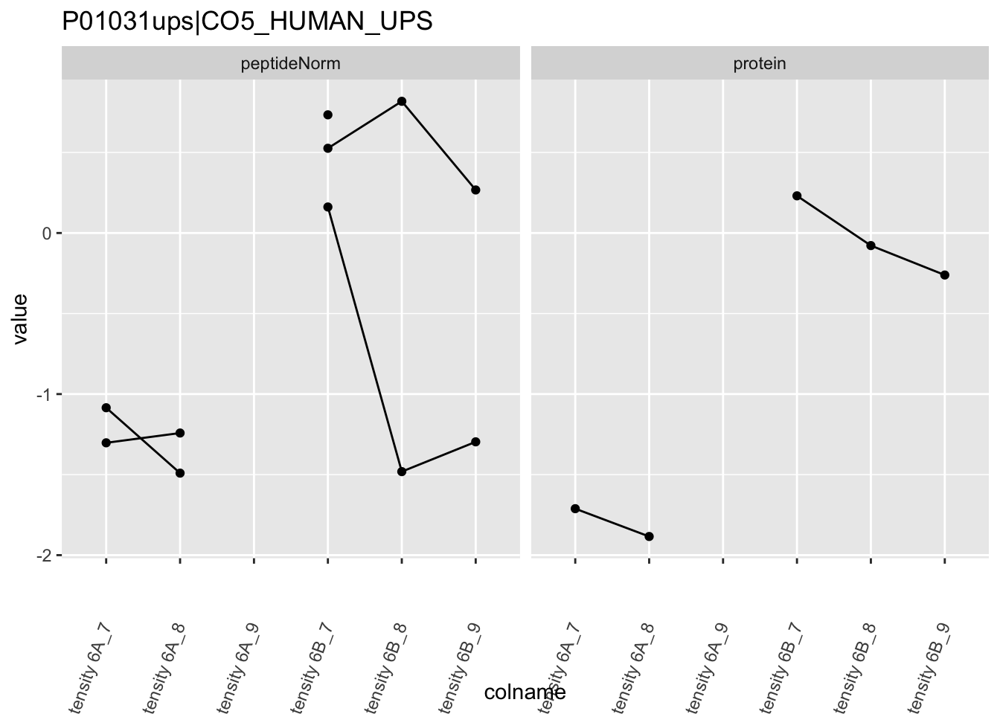
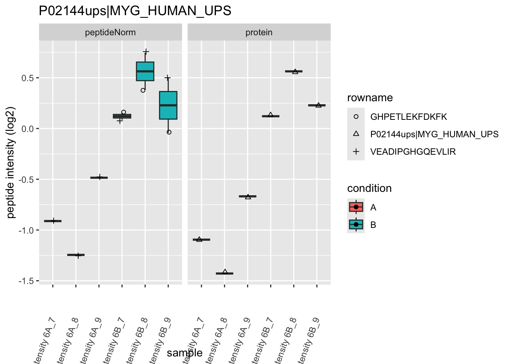
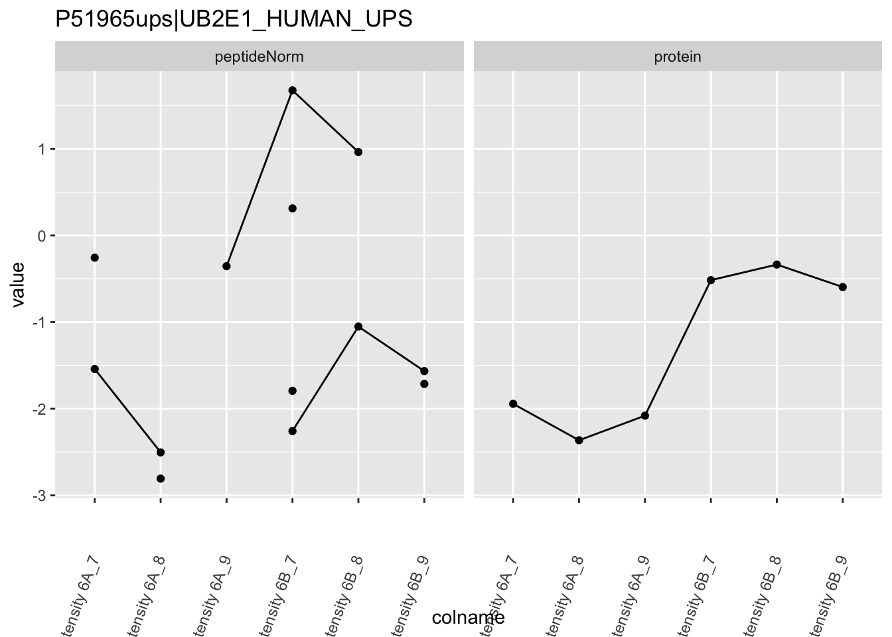
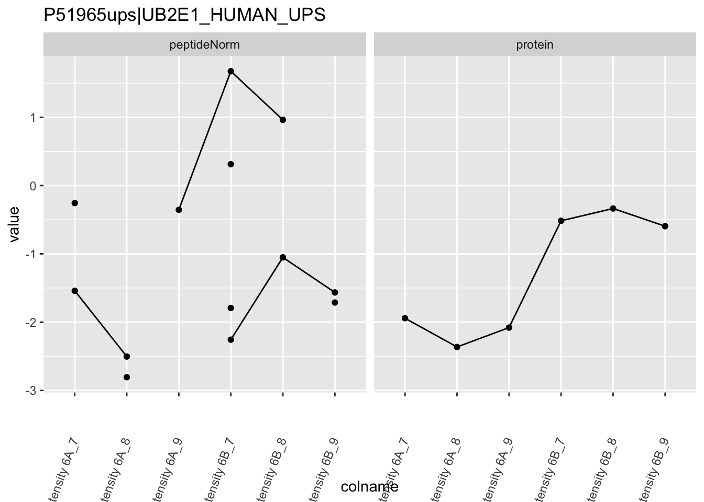

Introduction to proteomics data analysis: robust summarization
Lieven Clement
statOmics, Ghent University (https://statomics.github.io)

This is part of the online course Proteomics Data Analysis (PDA)
1 Background
This case-study is a subset of the data of the 6th study of the Clinical Proteomic Technology Assessment for Cancer (CPTAC). In this experiment, the authors spiked the Sigma Universal Protein Standard mixture 1 (UPS1) containing 48 different human proteins in a protein background of 60 ng/\(\mu\)L Saccharomyces cerevisiae strain BY4741. Two different spike-in concentrations were used: 6A (0.25 fmol UPS1 proteins/\(\mu\)L) and 6B (0.74 fmol UPS1 proteins/\(\mu\)L) [5]. We limited ourselves to the data of LTQ-Orbitrap W at site 56. The data were searched with MaxQuant version 1.5.2.8, and detailed search settings were described in Goeminne et al. (2016) [1]. Three replicates are available for each concentration.
2 Data
We first import the data from peptideRaws.txt file. This is the file
containing your peptideRaw-level intensities. For a MaxQuant search [6],
this peptideRaws.txt file can be found by default in the
“path_to_raw_files/combined/txt/” folder from the MaxQuant output, with
“path_to_raw_files” the folder where the raw files were saved. In this
vignette, we use a MaxQuant peptideRaws file which is a subset of the
cptac study. This data is available in the msdata package.
To import the data we use the QFeatures package.
We generate the object peptideRawFile with the path to the
peptideRaws.txt file. Using the grepEcols function, we find
the columns that contain the expression data of the peptideRaws in the
peptideRaws.txt file.
- Load libraries
library(tidyverse)
library(limma)
library(QFeatures)
library(msqrob2)
library(plotly)
library(data.table)
library(pcaMethods)- We use a peptides.txt file from MS-data quantified with maxquant that contains MS1 intensities summarized at the peptide level.
peptidesTable <- fread("https://raw.githubusercontent.com/statOmics/SGA2020/data/quantification/cptacAvsB_lab3/peptides.txt")
int64 <- which(sapply(peptidesTable,class) == "integer64")
for (j in int64) peptidesTable[[j]] <- as.numeric(peptidesTable[[j]]) - Maxquant stores the intensity data for the different samples in columnns that start with Intensity. We can retreive the column names with the intensity data with the code below:
- Read the data and store it in QFeatures object, the first column of
the peptides file contains the peptide sequence, which is a unique
identifier for the peptide. We will use this column as the rownames of
the assay data
fnames = 1.
pe <- readQFeatures(
assayData = peptidesTable,
fnames = 1,
quantCols = quantCols,
name = "peptideRaw")## Checking arguments.## Loading data as a 'SummarizedExperiment' object.## Formatting sample annotations (colData).## Formatting data as a 'QFeatures' object.## Setting assay rownames.## used (Mb) gc trigger (Mb) limit (Mb) max used (Mb)
## Ncells 8266137 441.5 16546607 883.7 NA 16546607 883.7
## Vcells 15993940 122.1 33213111 253.4 16384 28324276 216.1## used (Mb) gc trigger (Mb) limit (Mb) max used (Mb)
## Ncells 8266088 441.5 16546607 883.7 NA 16546607 883.7
## Vcells 15991717 122.1 33213111 253.4 16384 28324276 216.1## CharacterList of length 1
## [["peptideRaw"]] Intensity 6A_7 Intensity 6A_8 ... Intensity 6B_9In the following code chunk, we can extract the spikein condition from the raw file name.
cond <- which(
strsplit(colnames(pe)[[1]][1], split = "")[[1]] == "A") # find where condition is stored
colData(pe)$condition <- substr(colnames(pe), cond, cond) |>
unlist() |>
as.factor()Peptides with zero intensities are missing peptides and should be
represent with a NA value rather than 0.
2.1 Data exploration
45% of all peptide intensities are missing and for some peptides we do not even measure a signal in any sample.
3 Preprocessing
This section preforms preprocessing for the peptide data. This include
- log transformation,
- filtering and
- summarisation of the data.
3.2 Filtering
- Handling overlapping protein groups
We remove peptides that could not be mapped to a protein or that map
to multiple proteins (the protein identifier contains multiple
identifiers separated by a ;).
pe <- filterFeatures(
pe, ~ Proteins != "" & ## Remove failed protein inference
!grepl(";", Proteins)) ## Remove protein groups## 'Proteins' found in 2 out of 2 assay(s).- Remove reverse sequences (decoys) and contaminants
We now remove the contaminants and peptides that map to decoy sequences.
## 'Reverse' found in 2 out of 2 assay(s).## 'Potential.contaminant' found in 2 out of 2 assay(s).- Drop peptides that were identified in less than three sample.
We tolerate the following proportion of NAs: pNA = (n-3)/n.
nObs <- 3
n <- ncol(pe[["peptideLog"]])
pNA <- (n-nObs)/n
pe <- filterNA(pe, pNA = pNA, i = "peptideLog")
nrow(pe[["peptideLog"]])## [1] 5910We keep 5910 peptides upon filtering.
3.3 Normalize the data using median centering
We normalize the data by substracting the sample median from every intensity for peptide \(p\) in a sample \(i\):
\[y_{ip}^\text{norm} = y_{ip} - \hat\mu_i\]
with \(\hat\mu_i\) the median intensity over all observed peptides in sample \(i\).
3.4 Explore normalized data
Upon the normalisation the density curves are nicely registered
pe[["peptideNorm"]] |>
assay() |>
as.data.frame() |>
gather(sample, intensity) |>
mutate(condition = colData(pe)[sample,"condition"]) |>
ggplot(aes(x = intensity,group = sample,color = condition)) +
geom_density() +
theme_minimal()## Warning: Removed 4568 rows containing non-finite outside the scale range
## (`stat_density()`).We can visualize our data using a PCA plot eg. as provided by Nipals
from the pcaMethods package, that can handle missing
data.
plotPCA <- function (pe, assayName, varName=NULL)
{
require(pcaMethods)
if (!is.null(varName)) varName <- as.character(varName)
#extract assayData and transpose
dat <- pe[[assayName]] |>
assay() |>
t()
# Replace NaN values to NA (often occur upon median summarisation)
dat[is.nan(dat)] <- NA
# Run Nipals
pc <- pca(dat, method = "nipals")
# Make data frame for plotting
df <- merge(scores(pc), colData(pe), by = 0)
if (!is.null(varName)) return(
ggplot(df, aes(PC1, PC2, col = !!sym(varName))) +
geom_point() +
xlab(paste0("PC1 (", round(pc@R2[1] * 100, 1), "%)")) +
ylab(paste0("PC2 (", round(pc@R2[2] * 100, 1), "%)")) +
theme_minimal()
) else return(
ggplot(df, aes(PC1, PC2)) +
geom_point() +
xlab(paste0("PC1 (", round(pc@R2[1] * 100, 1), "%)")) +
ylab(paste0("PC2 (", round(pc@R2[2] * 100, 1), "%)")) +
theme_minimal()
)
}
plotPCA(pe, "peptideNorm", "condition")The first axis in the plot is showing the leading variability (log fold changes, differences on a log scale) between the samples.
We notice that the leading differences in the peptide data seems to be driven by technical variability. Indeed, the samples do not seem to be clearly separated according to the spike-in condition.
3.5 Summarization to protein level
- By default robust summarization is used:
fun = MsCoreUtils::robustSummary()
## Your quantitative and row data contain missing values. Please read the
## relevant section(s) in the aggregateFeatures manual page regarding the
## effects of missing values on data aggregation.## Aggregated: 1/13.6 Filter proteins that contain many missing values
We want to have at least 4 observed proteins so that most proteins
have at least 2 observations in each group.
So we tolerate a proportion of (n-4)/n NAs.
Note that the samples upon robust summarisation show a clear separation according to the spike-in condition in the second dimension of the MDS plot.
4 Data Analysis
4.1 Estimation
We model the protein level expression values using
msqrob. By default msqrob2 estimates the model
parameters using robust regression.
We will model the data with a different group mean. The group is
incoded in the variable condition of the colData. We can
specify this model by using a formula with the factor condition as its
predictor: formula = ~condition.
Note, that a formula always starts with a symbol ‘~’.
4.2 Inference
First, we extract the parameter names of the model by looking at the first model. The models are stored in the row data of the assay under the default name msqrobModels.
## (Intercept) conditionB
## -2.659614 1.502650We can also explore the design of the model that we specified using
the the package ExploreModelMatrix
Spike-in condition A is the reference class. So the mean
log2 expression for samples from condition A is ‘(Intercept). The mean
log2 expression for samples from condition B is’(Intercept)+conditionB’.
Hence, the average log2 fold change between condition b and condition a
is modelled using the parameter ‘conditionB’. Thus, we assess the
contrast ‘conditionB = 0’ with our statistical test.
4.3 Plots
4.3.1 Volcano-plot
volcano <- ggplot(rowData(pe[["protein"]])$conditionB,
aes(x = logFC, y = -log10(pval), color = adjPval < 0.05)) +
geom_point(cex = 2.5) +
scale_color_manual(values = alpha(c("black", "red"), 0.5)) + theme_minimal()
volcanoNote, that 20 proteins are found to be differentially abundant.
4.3.2 Heatmap
We first select the names of the proteins that were declared signficant.
sigNames <- rowData(pe[["protein"]])$conditionB %>%
rownames_to_column("protein") %>%
filter(adjPval<0.05) %>%
pull(protein)
heatmap(assay(pe[["protein"]])[sigNames, ])The majority of the proteins are indeed UPS proteins. 1 yeast protein is returned. Note, that the yeast protein indeed shows evidence for differential abundance.
4.3.3 Boxplots
We make boxplot of the log2 FC and stratify according to the whether a protein is spiked or not.
rowData(pe[["protein"]])$conditionB %>%
rownames_to_column(var = "protein") %>%
ggplot(aes(x=grepl("UPS",protein),y=logFC)) +
geom_boxplot() +
xlab("UPS") +
geom_segment(
x = 1.5,
xend = 2.5,
y = log2(0.74/0.25),
yend = log2(0.74/0.25),
colour="red") +
geom_segment(
x = 0.5,
xend = 1.5,
y = 0,
yend = 0,
colour="red") +
annotate(
"text",
x = c(1,2),
y = c(0,log2(0.74/0.25))+.1,
label = c(
"log2 FC Ecoli = 0",
paste0("log2 FC UPS = ",round(log2(0.74/0.25),2))
),
colour = "red")## Warning: Removed 30 rows containing non-finite outside the scale range
## (`stat_boxplot()`).What do you observe?
4.3.4 Detail plots
We first extract the normalized peptideRaw expression values for a particular protein.
for (protName in sigNames)
{
pePlot <- pe[protName, , c("peptideNorm","protein")]
pePlotDf <- data.frame(longForm(pePlot))
pePlotDf$assay <- factor(pePlotDf$assay,
levels = c("peptideNorm", "protein"))
pePlotDf$condition <- as.factor(colData(pePlot)[pePlotDf$colname, "condition"])
# plotting
p1 <- ggplot(data = pePlotDf,
aes(x = colname, y = value, group = rowname)) +
geom_line() +
geom_point() +
theme(axis.text.x = element_text(angle = 70, hjust = 1, vjust = 0.5)) +
facet_grid(~assay) +
ggtitle(protName)
print(p1)
# plotting 2
p2 <- ggplot(pePlotDf, aes(x = colname, y = value, fill = condition)) +
geom_boxplot(outlier.shape = NA) +
geom_point(
position = position_jitter(width = .1),
aes(shape = rowname)) +
scale_shape_manual(values = 1:nrow(pePlotDf)) +
labs(title = protName, x = "sample", y = "peptide intensity (log2)") +
theme(axis.text.x = element_text(angle = 70, hjust = 1, vjust = 0.5)) +
facet_grid(~assay)
print(p2)
} 

Note, that the yeast protein is only covered by 3 peptides. Only one peptide is picked up in condition A. This peptide is also only once observed in spike-in condition B. This puts a considerable burden upon the inference and could be avoided by more stringent filtering.
5 Session Info
With respect to reproducibility, it is highly recommended to include a session info in your script so that readers of your output can see your particular setup of R.
## R version 4.4.0 RC (2024-04-16 r86468)
## Platform: aarch64-apple-darwin20
## Running under: macOS 15.5
##
## Matrix products: default
## BLAS: /Library/Frameworks/R.framework/Versions/4.4-arm64/Resources/lib/libRblas.0.dylib
## LAPACK: /Library/Frameworks/R.framework/Versions/4.4-arm64/Resources/lib/libRlapack.dylib; LAPACK version 3.12.0
##
## locale:
## [1] en_US.UTF-8/en_US.UTF-8/en_US.UTF-8/C/en_US.UTF-8/en_US.UTF-8
##
## time zone: Europe/London
## tzcode source: internal
##
## attached base packages:
## [1] stats4 stats graphics grDevices utils datasets methods
## [8] base
##
## other attached packages:
## [1] ExploreModelMatrix_1.16.0 pcaMethods_1.96.0
## [3] data.table_1.17.6 plotly_4.10.4
## [5] msqrob2_1.15.1 QFeatures_1.19.3
## [7] MultiAssayExperiment_1.34.0 SummarizedExperiment_1.34.0
## [9] Biobase_2.64.0 GenomicRanges_1.56.1
## [11] GenomeInfoDb_1.40.1 IRanges_2.38.1
## [13] S4Vectors_0.42.1 BiocGenerics_0.54.0
## [15] generics_0.1.3 MatrixGenerics_1.16.0
## [17] matrixStats_1.4.1 limma_3.60.6
## [19] lubridate_1.9.3 forcats_1.0.0
## [21] stringr_1.5.1 dplyr_1.1.4
## [23] purrr_1.0.2 readr_2.1.5
## [25] tidyr_1.3.1 tibble_3.2.1
## [27] ggplot2_3.5.1 tidyverse_2.0.0
##
## loaded via a namespace (and not attached):
## [1] rlang_1.1.4 magrittr_2.0.3 shinydashboard_0.7.2
## [4] clue_0.3-65 compiler_4.4.0 vctrs_0.6.5
## [7] reshape2_1.4.4 ProtGenerics_1.36.0 pkgconfig_2.0.3
## [10] crayon_1.5.3 fastmap_1.2.0 XVector_0.44.0
## [13] fontawesome_0.5.2 labeling_0.4.3 utf8_1.2.4
## [16] promises_1.3.0 rmarkdown_2.28 tzdb_0.4.0
## [19] UCSC.utils_1.0.0 nloptr_2.1.1 bit_4.5.0
## [22] xfun_0.47 zlibbioc_1.50.0 cachem_1.1.0
## [25] jsonlite_1.8.9 later_1.3.2 highr_0.11
## [28] DelayedArray_0.30.1 BiocParallel_1.38.0 parallel_4.4.0
## [31] cluster_2.1.6 R6_2.5.1 bslib_0.8.0
## [34] stringi_1.8.4 boot_1.3-31 jquerylib_0.1.4
## [37] Rcpp_1.0.13-1 bookdown_0.40 knitr_1.48
## [40] BiocBaseUtils_1.10.0 httpuv_1.6.15 Matrix_1.7-0
## [43] splines_4.4.0 igraph_2.0.3 timechange_0.3.0
## [46] tidyselect_1.2.1 rstudioapi_0.16.0 abind_1.4-8
## [49] yaml_2.3.10 codetools_0.2-20 lattice_0.22-6
## [52] plyr_1.8.9 shiny_1.9.1 withr_3.0.1
## [55] evaluate_1.0.0 pillar_1.9.0 DT_0.33
## [58] shinyjs_2.1.0 hms_1.1.3 munsell_0.5.1
## [61] scales_1.3.0 minqa_1.2.8 xtable_1.8-4
## [64] glue_1.8.0 lazyeval_0.2.2 tools_4.4.0
## [67] lme4_1.1-35.5 cowplot_1.1.3 grid_4.4.0
## [70] MsCoreUtils_1.16.1 colorspace_2.1-1 nlme_3.1-166
## [73] GenomeInfoDbData_1.2.12 cli_3.6.3 fansi_1.0.6
## [76] S4Arrays_1.4.1 viridisLite_0.4.2 AnnotationFilter_1.28.0
## [79] gtable_0.3.5 rintrojs_0.3.4 sass_0.4.9
## [82] digest_0.6.37 SparseArray_1.4.8 farver_2.1.2
## [85] htmlwidgets_1.6.4 htmltools_0.5.8.1 lifecycle_1.0.4
## [88] httr_1.4.7 mime_0.12 statmod_1.5.0
## [91] bit64_4.5.2 MASS_7.3-61